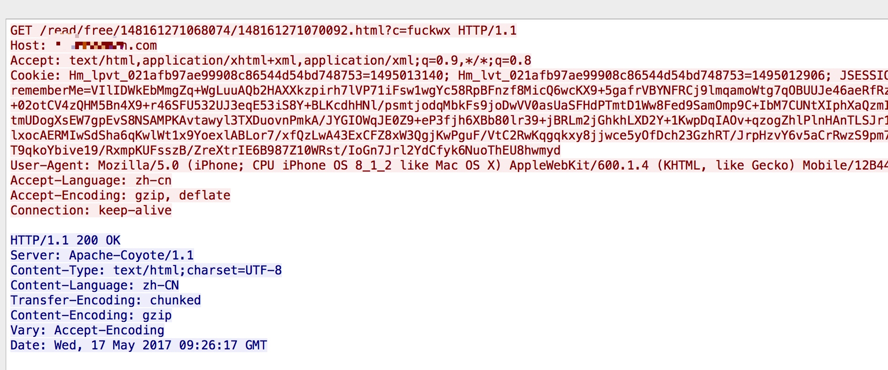
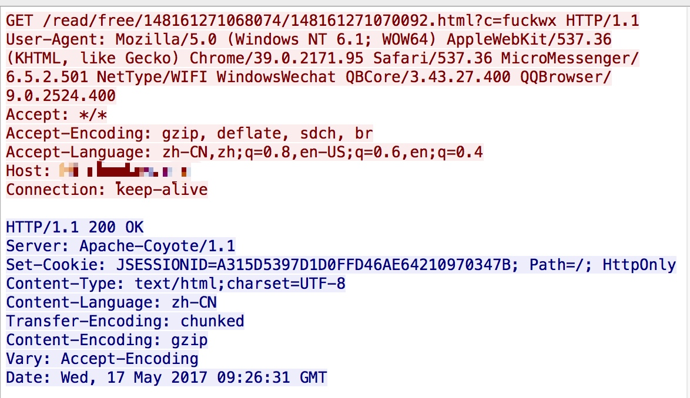

这是一个大坑，可能有人还没有注意到这个问题，但它确实存在，而且可能会影响你的统计数据。
现象
近期我们在微信上做推广后，做数据分析时发现一些异常数据：
- 大量用户来自天津、上海的ip
- 这些用户每次只访问一个页面，产生session之后就再也不来了
最初我们认为是下游推广渠道在坑我们钱，用天津和上海的服务器来刷访问用户数，近而骗取我们的推广费用。
然而和多家合作方推广后都发现同样的问题，所以觉得这个事情并有这么简单。经过一系列的排查之后才发现，这个大坑居然是微信造成的。
问题定位
为了确认这些“用户”是真用户，还是假用户，我们尝试了大量手段来分析，此处省略5000字，Fuck！
最终我们联想到了UC浏览器预读功能，开始怀疑是某个地方的预读导致，于是按这个思路来进行定位。
关于UC浏览器的预读功能：开启此功能后，在读小说时，浏览器会分析页面中的“下一章”链接，并后台提前请求服务端拿到响应数据，等用户点下一章的时候，页面就可以瞬间展示出来。
定位思路：
- 组装一个没有人会访问的URL
- 通过微信浏览器访问该URL
- 监控服务端日志，确认是否会有其它人发起同样的请求，如果有，那就说明微信或者中间的网络服务商有人在预读。
定位过程
组装一个没有人会访问的URL
- 正常的URL：/bookinfo/148161271068074.html
- 组装的URL：/bookinfo/148161271068074.html?c=fuckwx
说明一下：为了验证这个问题，我们另外搭了一个服务器，根本不会有用户访问。而且这个世界上应该没有人会同时带fuckwx这个参数来访问我的服务器。
微信浏览器访问
监控服务端accesslog
wap@iZ2zeg0900kzwn7hnqg3pzZ:~/app/apache-tomcat-7.0.68/logs$ tailf localhost_access_log.2017-05-17.txt | grep fuckwx 20170517172145|045|112.17.238.22|2833|GET|/bookinfo/148161271068074.html|200|19|?c=fuckwx|Mozilla/5.0 (iPhone; CPU iPhone OS 8_1_2 like Mac OS X) AppleWebKit/600.1.4 (KHTML, like Gecko) Mobile/12B440 MicroMessenger/6.5.3 NetType/4G Language/zh_CN 20170517172154|054|117.185.27.114|2832|GET|/bookinfo/148161271068074.html|200|8|?c=fuckwx|Mozilla/5.0 (iPhone; CPU iPhone OS 10_2_1 like Mac OS X) AppleWebKit/602.4.6 (KHTML, like Gecko) Mobile/14D27 MicroMessenger/6.5.5 NetType/WIFI Language/zh_CN到这里已经基本可以确认，就是有人在重发我的请求
我的ip是112.17.238.22浙江移动的IP。
而这个重发的ip是117.185.27.114上海移动的IP。为了确认是微信的问题，还是中间网络服务端的问题。我们通过更换浏览器，更换网络环境进行对比测试，结果发现：只有在微信浏览器下会出现这个问题，与网络环境无关。
抓包信息http头结果如下:
真实用户请求
微信服务器请求

问题分析
通过上述的数据我们发现以下问题
1. 微信是在真实用户请求后几秒内，接着发起一次同样地址的请求。
2. 微信在请求的时候更换了UA。
3. 微信在请求的时候没有携带cookie。
4. 微信是完全随机IP进行访问，目前来看应该是有好几个段的IP在做这个事情，主要集中在天津和上海。
5. 微信是完全随机进行这样的重发操作，找不到任何规律。
这些特性放在一起，就很尴尬了啊：服务端完全不知道这个请求是机器人还是真实用户，我们统计出来的访问用户数就明显不准确了，而且会影响人均PV等统计数据。
问题处理
暂时想到的是通过js来埋点的方式进行用户统计，但是需要验证这个微信是否会对ajax请求做同样的重发操作。
其它方案还是没有想到：
如果有哪位读者想到了求分享思路。
同时如果有微信内部的人看到了这个文章，麻烦解惑一下微信这么做的原因。以及我们的应对方案。